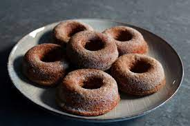

Baked Apple Cider Donuts

Homemade apple cider donuts are cakey, dense, and intensely flavored.
Baked, not fried, these fall treats come together quickly and easily
– a convenient recipe with no mixer required.
Make the morning less hectic by reducing the apple cider the night before.
Read on for all the tips you need to make this Fall favorite!
Ingredients
- 2 cups fresh apple cider
- 2 cups all-purpose flour
- ¾ teaspoon baking powder
- ¾ teaspoon baking soda
- ¼ teaspoon fine salt
- 1 teaspoon ground cinnamon
- 1 pinch ground cardamom
- 1 pinch freshly grated nutmeg
- ½ cup white sugar
- ½ cup packed brown sugar
- ½ cup warm milk
- 6 tablespoons unsalted butter, melted, divided
- ¾ teaspoon vanilla extract
- 1 large egg
Steps
- Preheat the oven to 375 degrees F (190 degrees C). Butter two 6-cup donut pans.
- Pour apple cider into a saucepan and place over medium heat. Bring to a simmer and
let it cook, watching carefully, until the cider is reduced to 1/2 cup. If it reduces
too much, add enough water to make 1/2 cup. Set aside until needed.
- Add flour, baking powder, baking soda, salt, 1 teaspoon cinnamon, cardamom, and nutmeg
to a large bowl. Mix with a whisk until combined and set aside until needed.
- Whisk 1/2 cup white sugar, brown sugar, milk, 2 tablespoons melted butter, vanilla extract,
and egg together in another bowl until combined. Add the apple cider reduction and the dry
ingredients. Whisk together to form a slightly thick batter; do not overmix.
- Spoon or pipe the batter into the prepared donut pans, filling them about 3/4 of the way up.
- Bake in the center of the preheated oven until the tops are lightly browned, and the donuts spring
back slightly to the touch, 10 to 12 minutes. Let cool for 10 minutes in the pans before removing to
a sheet pan lined with a silicone baking mat. Cut out any donut holes as necessary.
- If desired, while still slightly warm, brush the donuts lightly with remaining melted butter.
Mix 1 cup white sugar and 1 tablespoon cinnamon together for topping in a shallow dish; toss in donuts to coat.
Let cool completely before serving.